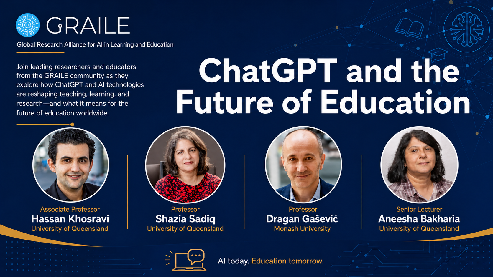
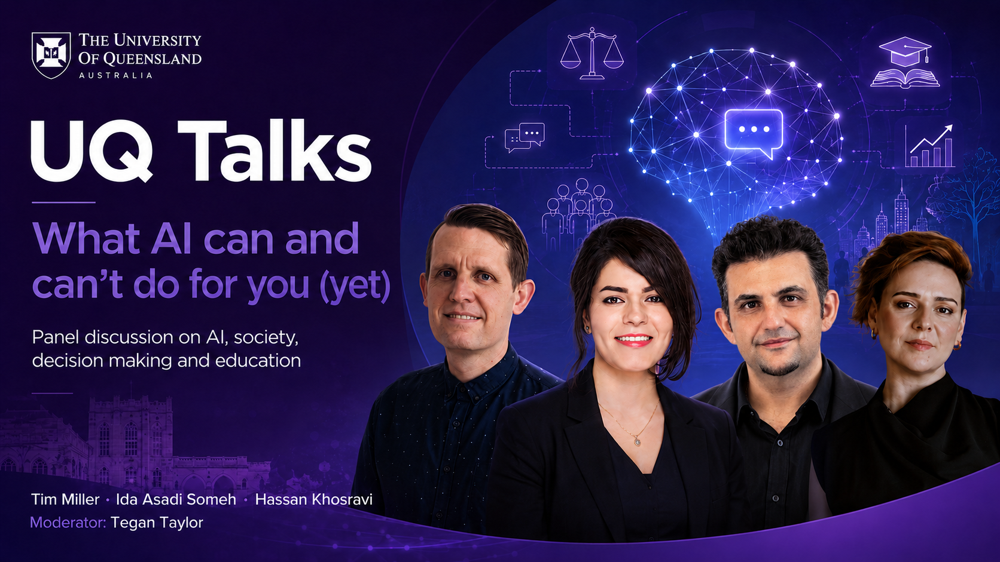
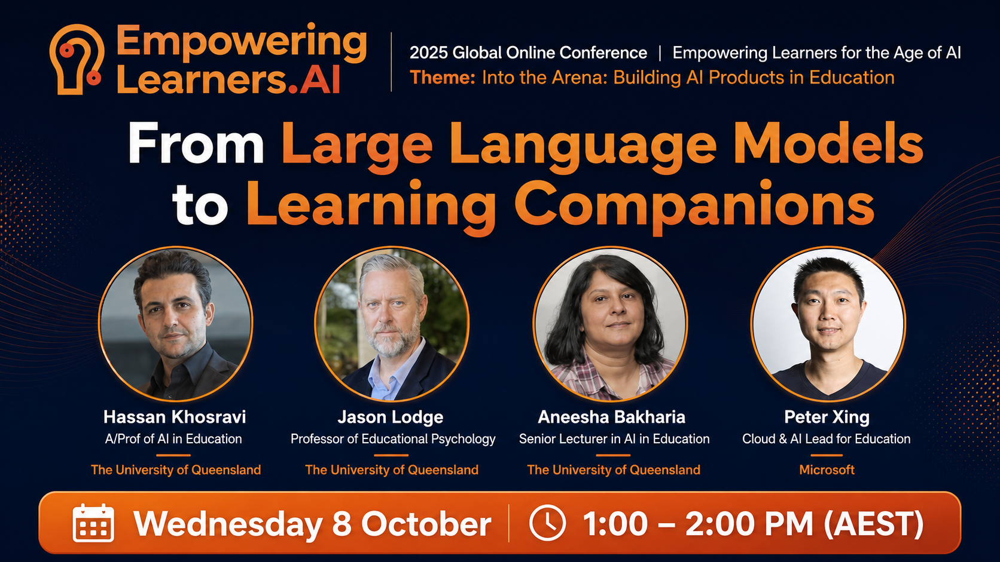
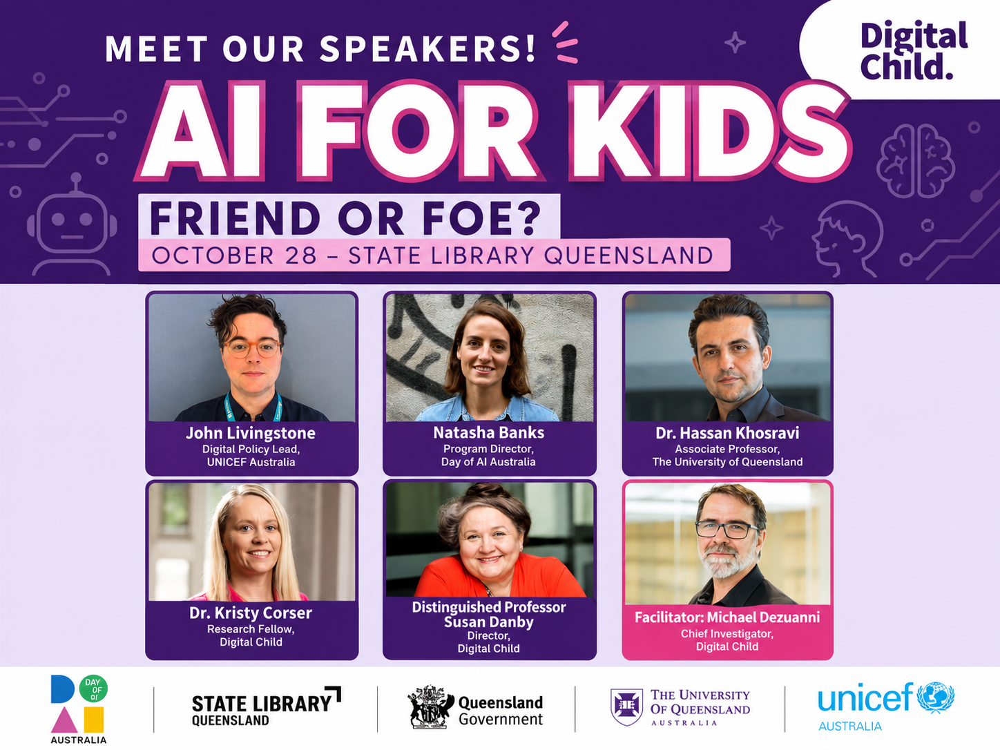
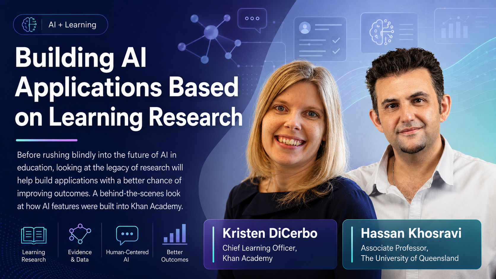
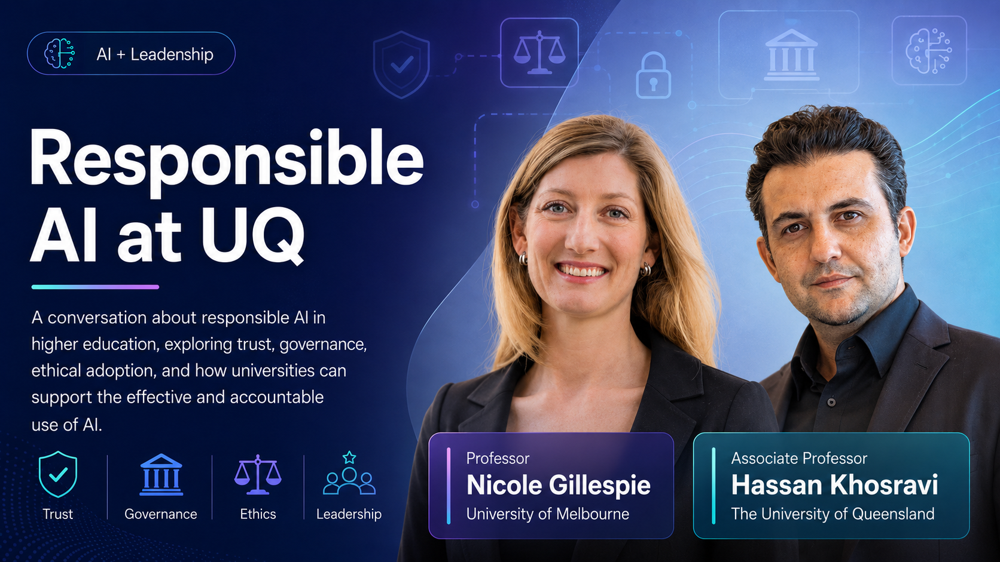
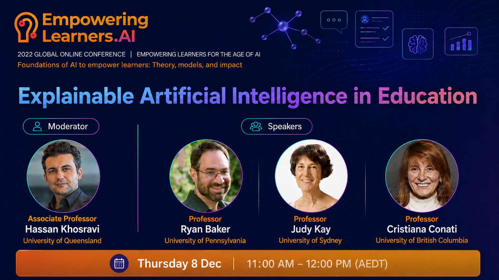
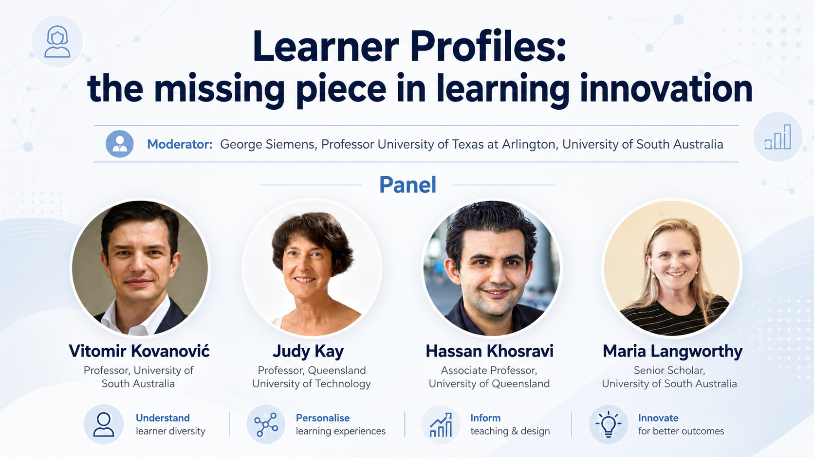

Media
A collection of videos, interviews, talks, and stories featuring my work, ideas, and impact in AI, education, and beyond.

A webinar exploring potential benefits and drawbacks of using ChatGPT in education — how instructors and students can leverage it, and how it may transform instruction, assessment, and feedback.

A UQ public talk exploring the real capabilities and current limitations of artificial intelligence — what it can do for you today, and where it still falls short.

A panel discussion exploring how large language models are being transformed into intelligent learning companions — examining the opportunities, challenges, and future directions for AI in education.

A talk exploring the role of artificial intelligence in children's lives and education — examining whether AI is a helpful companion or a potential risk for young learners.

Before rushing blindly into the future of AI in education, looking at the legacy of research will help build applications with a better chance of improving outcomes. A behind-the-scenes look at how AI features were built into Khan Academy.

A short video about RiPPLE — a platform leveraging learning sciences and AI to transform student learning into an active, social, and personalised experience. Students create and peer-review resources; instructors build large practice banks at low cost.

Featuring Professor Nicole Gillespie, this short video discusses present issues regarding AI usage and suggests measures that could lead to its more responsible application.

A short video about current challenges in education and how AI can help address them, featuring an example AI-powered educational technology developed at UQ.

Exploring Fairness, Accountability, Transparency, and Ethics (FATE) of AI in education. The panel examines the role and need for explainable AI (XAI) — benefits, approaches, and potential pitfalls of providing explanations within education.

Exploring the history of learner profiles, actual work being conducted, and setting the stage for future innovations. As individuals move through life, learning is a constant need requiring new mechanisms for communicating capabilities and competencies.
A short video with Associate Professor Kelly Matthews discussing current challenges in education and how AI can help address them.
From UQ's Higher Ed Debate series — staff and students debate whether SECaTs should be abolished, following the common debate style of two teams of three members.
For centuries, exams have played a central role in assessing student competencies. In the first debate from UQ's Higher Ed Debate series, staff and students examined this controversy — two teams of three members debating whether we should ban final exams.
Much of the sector's discussion has focussed on challenges of shifting overnight to fully online delivery. This piece highlights innovative practices that were changing education well before COVID-19, including UQ's RiPPLE platform.
A senior lecturer at The University of Queensland is gaining international attention for innovative efforts to change tertiary level teaching and learning with the help of artificial intelligence.